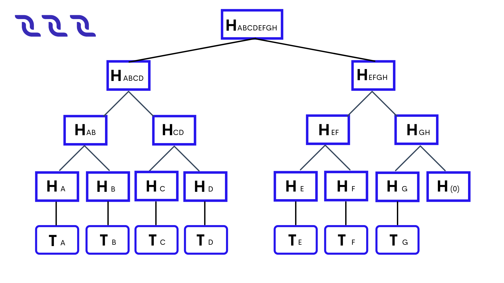

Block#
A block is a link in the chain of the blockchain. Block contains transactions. A block has its height.
The maximum block size is \(1\) MB. The maximum total complexity of scripts in transactions of the block is \(2,500,000\). The complexity of all executed scripts is taken into account: dApp scripts, account scripts, and asset scripts.
Block Generation#
A block generation is a creation of a new block on the blockchain. Blocks are generated by generating nodes according to FPoS algorithm and the DecentralChain-M5 protocol. The block generator signs the block headers only. The block headers contain the merkle root hash of the block transactions. This makes it possible to verify the block headers apart from transactions and to provide evidence of the presence of transactions in the block without the presence of all transactions. See details in the transactions root hash article.
Base Target#
The base target is the variable in the average block generation time formula that adjusts block generation time to \(60\) seconds.
Generation Signature#
Generation signature is the variable in the average block generation time formula. It is used to check whether the current generating node is eligible to generate the next block. The generation signature is calculated using VRF (verifiable random function with short proofs and keys) — a pseudo-random function that uses a message and the private key of an account to provide a non-interactively verifiable proof for the correctness of its output.
This improvement allows resisting stake grinding attacks aimed at influencing block generation randomness to skip miner’s opportunity to create a block. The use of VRF makes signature generation unpredictable because of the need to know the private key for calculation. Only the holder of the private key can compute the hash, but verifying the correctness of the hash using the public key from block header is available to anyone.
The VRF contains calculateVRF function, which calculates proof for some message, and verifyVRF function, which verifies proof from calculateVRF function with a message and the public key of the signer. Considering that a block’s generation signature is equal to calculateVRF output for a previous generation signature with account private key sk (of generator of \(i+1\) th block):
generationSignaturei+1 = VRFproof = calculateVRFsk(VRFi)
The output of calculateVRF function is a VRF proof, which means that the validity of the signature can be checked. The output of function verifyVRF(pk \(_i\), generationSignature \(_i\)) is used to define the time delay between \(i+99\) and \(i+100\) blocks for concrete block generator.
Block Height#
The block height is a sequence number of a block in the blockchain.
Block Signature#
A block signature is a hash that a generating node acquires when it signs the generated block with the private key of the account from the node’s wallet.
Block Timestamp#
A block timestamp is a time of block generation. The time is specified in milliseconds that have passed since the beginning of the unix epoch.
When the node receives a new block from the blockchain network, it verifies that the timestamp value of the block does not outpace the UTC time by more than \(100\) milliseconds. The timestamp value of the block is validated by nodes using the formula from FPoS.
Genesis Block#
A genesis block is the first block of the blockchain. A genesis block contains one or more genesis transactions. There is one genesis block in the blockchain.
Transactions Root Hash#
The transactionsRoot field in the block header contains the root hash of the Merkle tree of transactions of the block. The root hash is the proof that the block contains all the transactions in the proper order. The transactions root hash in the block header has the following purposes:
To prove the integrity of transactions in the block without presenting all transactions.
To sign the block header only, separately from its transactions.
transactions Root Сalculation#
The hash of each transaction in the block is calculated. For example:
\(H_A\) = hash(\(T_A\))
\(H_B\) = hash(\(T_B\))
Each pair of adjacent hashes is concatenated, and the hash is calculated for each resulting concatenation:
\(H_{AB}\) = hash(\(H_A\) + \(H_B\))
If the last hash does not have a pair, it is concatenated with the zero byte hash: \(H_{GH}\) = hash(\(H_G\) + hash(0))
Step 2 is repeated until the root hash is obtained:
\(H_{ABCDEFGH}\)
The root hash is written in the transactionsRoot field.
If the block is empty, then transactionsRoot = hash(0). DecentralChain blockchain uses BLAKE2b-256 hashing function.
Proof of Transaction in Block#
Let’s suppose that side \(1\) stores the full blockchain data and side \(2\) stores the block headers only. To prove that the block contains a given transaction, side \(1\) provides the following data:
T: Transaction to check.
merkleProofs: Array of sibling hashes of the Merkle tree, bottom-to-top.
index: Index of the transaction in the block.

For example, for the \(T_D\) transaction:
merkleProofs = [ \(H_C\), \(H_{AB}\), \(H_{EFGH}\) ]
index = \(3\)
Side 2 checks the proof:
It calculates the hash of the transaction being checked (all the transaction data is hashed, including the signature): \(H_D\) = hash(\(T_D\))
2. It concatenates the current hash with the corresponding hash of the merkleProofs array and calculates the hash of concatenation. index determines in which order to concatenate the hashes:
If the nth bit of index from the end is \(0\), then the order is: the current hash + the nth hash of the merkleProofsarray (proof hash is on the right).
If the nth bit is \(1\) , the order is: the nth hash of the merkleProofsarray + the current hash (proof hash is on the left). For example, index = \(3_{10}\) = \(11_2\) , thus:
merkleProofs[0] = \(H_{C}\) is on the left,
merkleProofs[1] = \(H_{AB}\) is on the left,
merkleProofs[2] = \(H_{EFGH}\) is on the right.
It repeats step 2 until the root hash is obtained: \(H_{ABCDEFGH}\)
It compares the root hash obtained with the already known transactionsRoot from the block header. If the hashes match, then the transaction exists in the block.
Tools#
The following Node API methods accept transaction IDs and provide the proof that the transaction is in a block for each transaction:
GET /transactions/merkleProof
POST /transactions/merkleProof
The methods are described in the transaction article. You can check a transaction on the same blockchain without using a root hash, since the DecentralChain nodes store the entire blockchain data, including all transactions. Use the following built-in Ride function:
transactionHeightById(id: ByteVector): Int|Unit
The function returns the block height if the transaction with the specified ID exists. Otherwise, it returns a unit. See the function description in the blockchain functions article. To check a transaction in a block on the external blockchain you can use the following built-in Ride function:
createMerkleRoot(merkleProofs: List[ByteVector], valueBytes: ByteVector, index: Int): ByteVector
This function is applicable if the external blockchain uses the same algorithm for calculating the root hash of transactions. The createMerkleRoot function calculates the root hash from the transaction hash and sibling hashes of the merkle tree (see Steps 1–3). To check a transaction in a block, compare the calculated root hash with the transactionsRoot value in the block header.